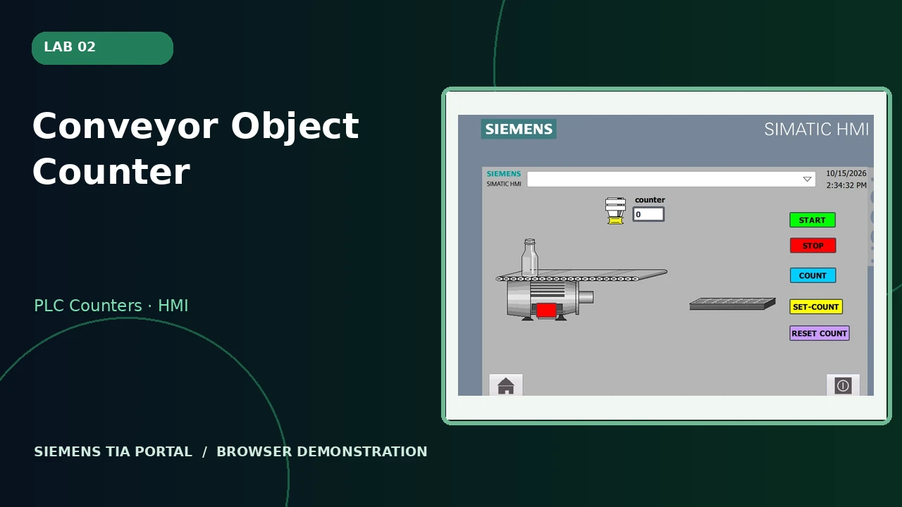
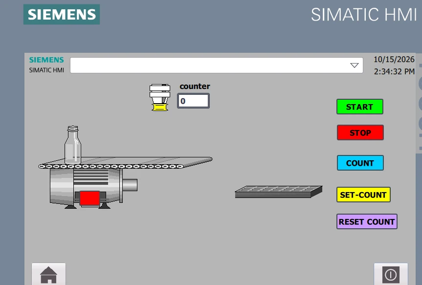
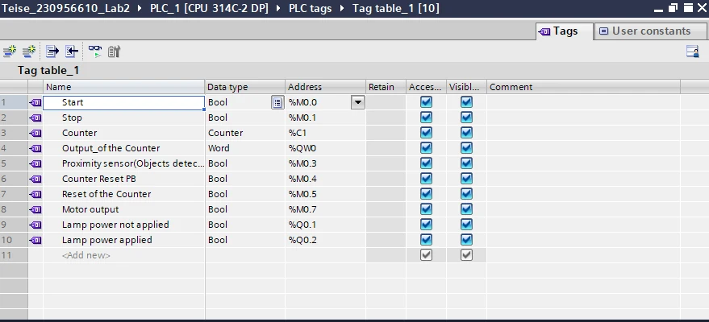
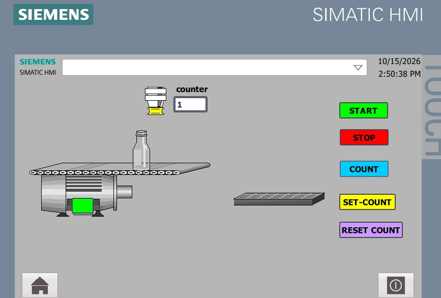
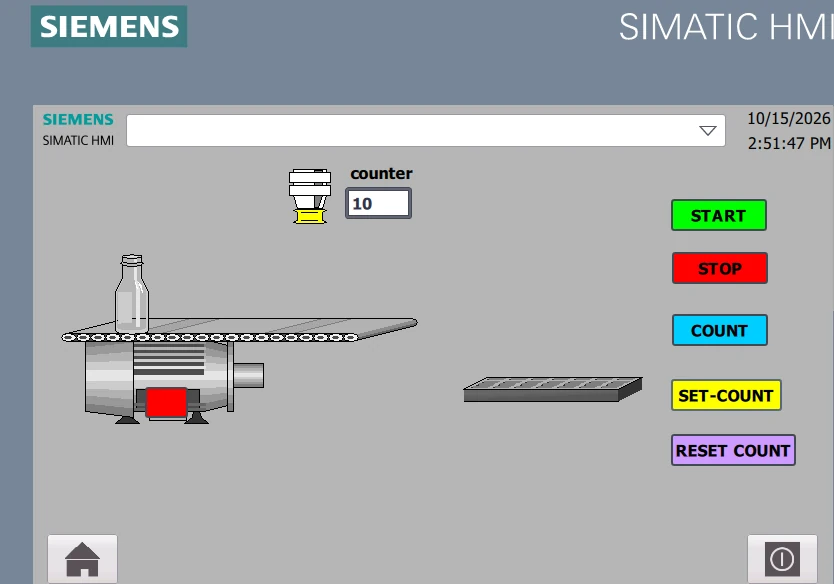
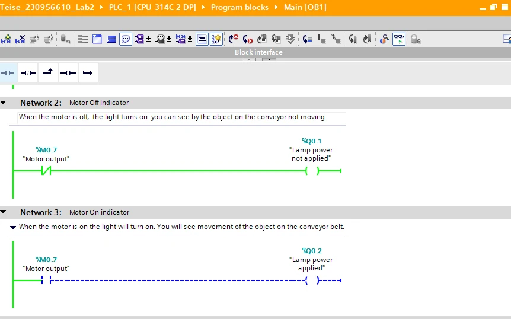
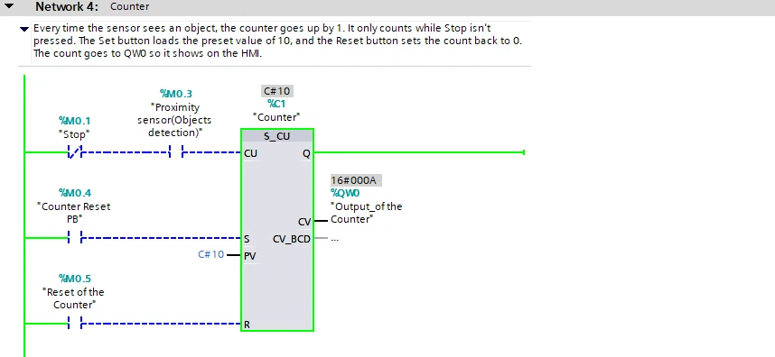

Lab 02: Conveyor Object Counter
A conveyor that detects objects and stops at the target count.

What the system does
The supplied ladder screenshot labels a proximity-sensor count-up function (S_CU), a count preset of 10, a stop condition when the counter reaches its target, and separate set/reset controls.
Functional stages
- Start/Stop latching controls a simulated conveyor motor
- A proximity sensor increments an S_CU count
- A target count of 10 initiates the stop condition and a reset clears the count
Actual project evidence






Siemens TIA Portal project archive
Download ZIP ↓Original supplied project retained unchanged internally. Some filenames and project metadata contain student identifiers.